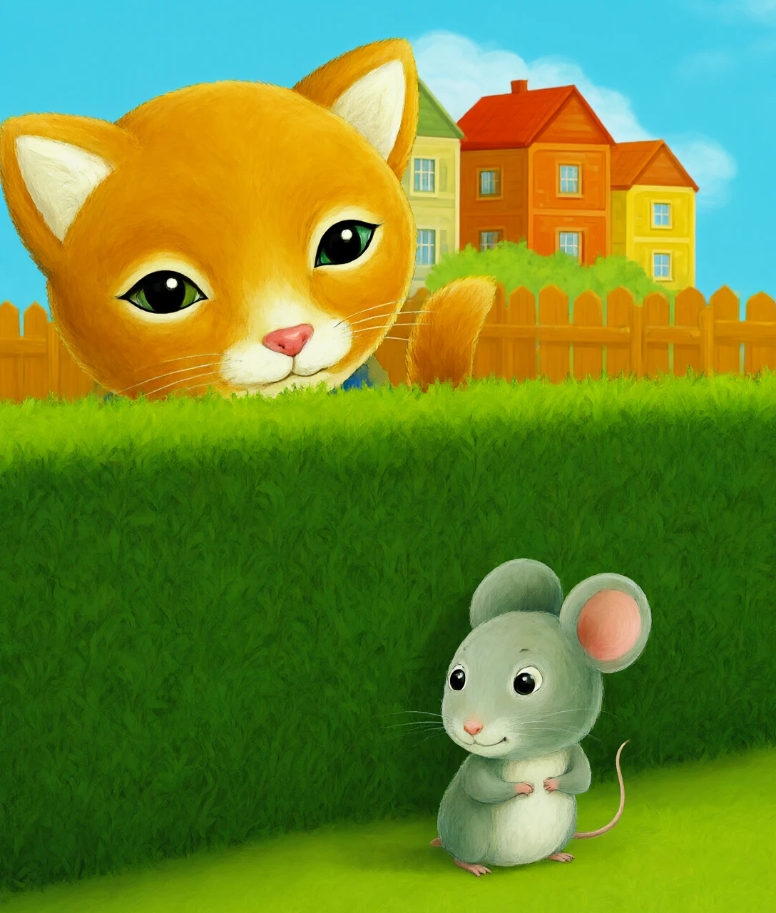
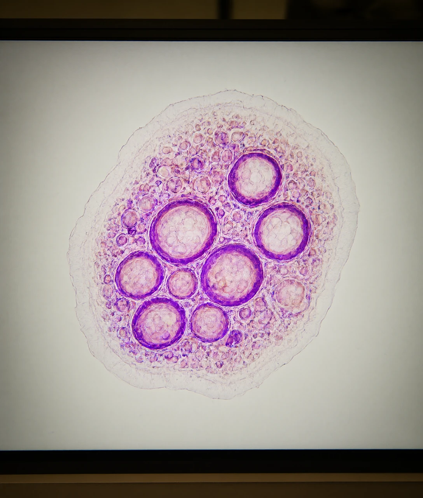
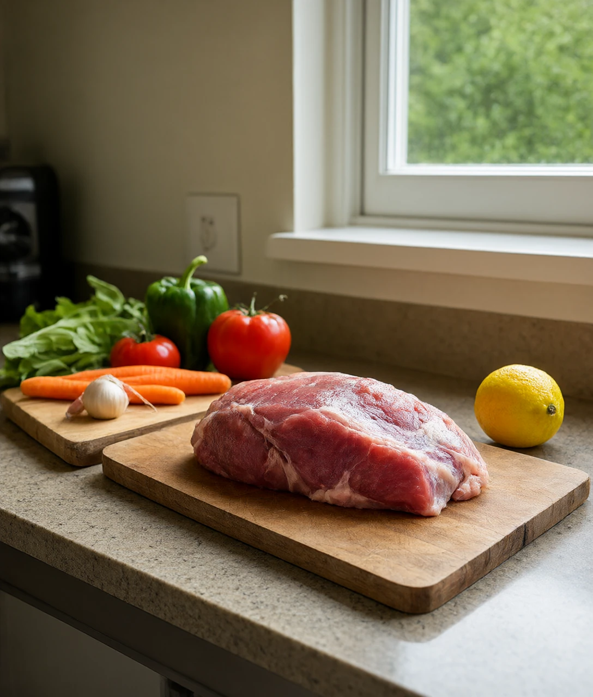

一个直径约 5 微米、连神经都没有的细胞，怎么改写了一只老鼠的保命本能

先补两句底。细胞就是生物最小的结构单位。微米就是千分之一毫米。
这个主角只有一个细胞，直径约 5 微米。相当于一张纸厚度的二十分之一。
健康的小鼠闻到猫尿，会立刻绕开。这是它最可靠的一条保命规则。
被弓形虫感染的小鼠，行为会变。
它躲猫尿躲得少了，活动范围更大，反应更慢。
2000 年，英国牛津大学的一组研究者做了对照观测。
他们把猫尿放在场地一角，记录感染鼠和未感染鼠的停留时间。
差异清晰可测。论文发在《Proceedings of the Royal Society B》上。
野外数据也对得上。一项种群观测认为，感染个体的被捕食率显著更高。
于是「弓形虫操纵老鼠送死」这个说法传开了。
这个说法抓住了一半真相，也丢掉了另一半。
它把机制说成了一个有意图的计划。真实的因果链，要笨拙得多。
好比一个人被下了药，事后却以为那是自己的主意。
先看它到底图什么。
弓形虫要完成有性繁殖，必须进入猫的肠道。
它自己不会游泳，不会跳，也不会飞。从一个宿主到另一个宿主，只能靠被吃掉。
那它到底要在谁的身体里，才能完成繁殖？
弓形虫能感染的动物很多。鼠、鸟、羊、猪、牛、人，几乎所有温血动物都能当中间宿主。
但在这些身体里，它只能做无性繁殖。不断分裂，钻进肌肉和大脑，形成组织囊，然后安静等着。
只有猫科动物，是它的终末宿主。终末宿主就是它完成有性繁殖的那一位。
好比同一条流水线，前面的工序哪儿都能做。最后一道，只有猫能完成。
在猫的小肠上皮细胞里，它走完有性生殖的全过程，产生卵囊，随粪便排到体外。
一只初次感染的猫，1 到 3 周内可以排出上亿个卵囊。
之后就停了。多数猫一生只排这么一次。
刚排出的卵囊还没有感染力。要在环境中待 1 到 5 天，完成孢子化，才具备感染能力。
这个时间窗对公共卫生很关键。
猫砂盆里新鲜的粪便风险低，放了 24 小时以上的才是重点。
孢子化后的卵囊，在潮湿土壤里能活一年以上。耐寒，也耐干燥。
这也是它能遍布全球的原因之一。
为什么偏偏是猫粪，成了它出厂的第一站？
这一章要老实说：机制还没有定论。
目前至少有三种解释。各自有实验支持，也都有关键缺口。
就像一台电脑出了故障，可能有三种原因。症状一样，病因至今没查清。
第一种叫「直接动手」。
弓形虫在脑内形成组织囊，囊壁周围有轻微炎症。
2013 年，有研究者在鼠脑中发现，虫体能分泌一种参与多巴胺合成的酶。
多巴胺就是脑子里传递「想要」的信号分子。
于是他提出假说：局部多巴胺升高，冒险行为增加。
但后续研究测到的多巴胺变化不稳定。囊所在的位置，也和行为改变对不上。
第二种叫「免疫副作用」。
虫体引起的慢性炎症，会改变脑内小胶质细胞的状态，进而影响神经递质环境。
这条路径的麻烦在于：它很难解释，为什么改变偏偏只针对「怕猫」。
换成整体反应变慢，就解释不了那么准。
第三种是「囊本身就不该在那儿」。
2020 年前后的观测显示，组织囊可以在神经元里长期存在。神经元就是神经细胞。
它甚至能让宿主细胞分泌物质，去招来新的免疫细胞。
至于这些囊有没有主动干预神经信号，目前没有直接证据。仍属推测。
三种说法并存这件事本身值得记住。
一个现象的机制可以长期悬而未决。而「行为确实变了」这一层事实，并不因此动摇。
虫体进了大脑，究竟动了哪里？
先看规模。全球血清抗体阳性率，大致在 30% 上下。换算一下：每三个人里，就有一个。
抗体就是身体认出敌人之后造出的标记蛋白。
不同地区的调查结果，从 10% 到 70% 不等。
中国部分地区的调查数据在 5% 到 15% 之间，城乡差异明显。
法国、巴西等国的血清学调查，曾报告超过 80% 的阳性率。这和当地饮食习惯、饮水条件有关。
也就是说，感染弓形虫的人以亿计。绝大多数一辈子没有任何感觉。
健康成年人初次感染，通常没症状。
或者只有几天低烧、乏力、淋巴结肿大，容易被当成感冒。
之后虫体以组织囊的形式，长期潜伏在肌肉和脑组织里。
被免疫系统压着，不闹事。好比背上背着一个睡着了的袋子。
真正的风险，集中在两类人。
一是孕妇在怀孕期间初次感染。
虫体能经胎盘传给胎儿。孕早期传播率低，但后果更重；孕晚期传播率高，症状却轻。
各国有不同的筛查策略。
二是免疫功能被抑制的人。比如器官移植后用药、艾滋病晚期。
潜伏的囊可能重新活跃，引起脑炎。
还有一个常被忽略的后果：眼病。
弓形虫性视网膜脉络膜炎，是后天致盲的原因之一。
南美部分地区的发病率明显更高，和当地流行的虫株类型有关。
感染了会怎样，风险落在谁身上？

它的传播链条非常干净。
猫排卵囊，卵囊在土壤或水里孢子化，被中间宿主吃下或喝下。
虫体在中间宿主的脑和肌肉里等着。中间宿主被猫吃掉，它回到猫的肠道。
整条链的每一环，都可以被公共卫生手段切断。
切在哪一环最省力？答案是厨房。
好比关窗防蚊，切的是路径，不是虫子。
弓形虫的组织囊怕热。肉的中心温度到 66 摄氏度以上，再保持一会儿，它就失活。
66 摄氏度，相当于刚端上桌的热汤。
再加上生熟案板分开、不尝生肉馅、蔬菜水果洗净。
整套做下来，一次清理不过 2 分钟，成本近乎为零。
养猫家庭再加一条：猫砂盆每天清理，戴手套，事后洗手。
怀孕期间，把铲屎这件事交给别人。
最后留一个还没有答案的问题。
为什么同一株弓形虫，在鼠身上能改掉「怕猫」这一项，在别的宿主身上却几乎不留痕迹？
宿主和寄生虫共同演化了多久，各自付出了什么代价，目前只有零散的观测。
还没有一套能自洽解释全部数据的理论。
